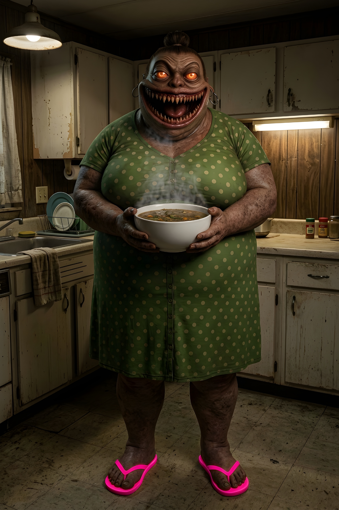

THE VISITOR

I woke up with a pounding headache that afternoon. My dimly lit bedroom seemed to be spinning around me, making me feel even more nauseous. My stomach was hurting so bad from hunger, and my left arm was aching because I’d slept funny on it.
Almost immediately, fragments of the previous night came rushing back. Allison breaking up with me out of nowhere over dinner. Her saying I had no passion for anything in life. Me begging her to reconsider her decision. And her doubling down, telling me I was too predictable. Too safe. No surprises.
I told her that if she wanted surprises, she should get into a relationship with a magician. That only made her angrier. She got up, threw her drink into my face, and left without another word. I spent the rest of the night drinking far more than I should have, trying to drown my frustration in alcohol..
Truth is, I’d suspected for a long time that she was seeing someone else. It wasn’t just some random paranoid thought that had popped into my head. There had been too many little things that didn’t add up. We were spending less and less time together, and she always seemed to have some excuse whenever we had a scheduled trip, a planned dinner, or even just a night when we were supposed to hang out.
Sometimes she’d cancel at the last minute, other times she’d suddenly have somewhere else she needed to be. Whenever I asked her what was going on, she’d get defensive almost immediately and accuse me of making things up in my head. The more I pressed her, the more irritated she became, which only made me more convinced that there was something she wasn’t telling me.
When I arrived at my apartment complex later that morning, barely able to walk straight, there was a little crowd swarming around a police car parked in the north parking lot, its overhead lights blinking brightly. I remember wondering if somebody had gotten hurt, or worse. Then, in the elevator, I ran into the overly inquisitive old lady from the apartment next to mine. She quickly gave me the lowdown without me even asking. The girl in Unit 12 on the eighth floor right above me had gone missing under mysterious circumstances.
According to the old lady, the girl lived alone. Her mother, who lived in another town, had last visited her a week earlier, and that was the last time anyone had seen her. After several days of unanswered calls and not hearing from her at all, her mother finally came over to check on her. She found the apartment empty. There was still food sitting untouched on the dining table, as if the girl had simply gotten up in the middle of a meal and never came back. Her phone and other belongings were still inside, too, but there was no sign of her anywhere. She hadn't been seen leaving the building on the security footage either.
Creepy. Creepy.
I thanked the old lady for the unsolicited piece of gossip, but my mind was still under the influence, and I was too angry and bitter over getting dumped so one-sidedly to give it much thought.
I went straight to bed and passed out almost immediately. Honestly, given how much I had drunk the night before, I was surprised I could remember anything at all.
It was still bright outside when I woke up that afternoon, with the sound of traffic blaring in the distance as people headed out of the city for the weekend, trying to escape the hustle and bustle for a little while.
I forced myself into a sitting position on the edge of the bed, pressing my thumbs against my temples in a futile attempt to ease the pounding in my head. Then, all of a sudden, I thought about the missing girl again and something the old lady next door had told me. It hit me that I had woken up in the middle of the night to the sound of loud shuffling coming from right above my bedroom a few nights earlier. If she had already gone missing at that point, then who could have made that sound?
Maybe the police could use this information to help them solve the case. I reached over to my nightstand to grab my phone, but it was not there. That's when I heard my front door swing open loudly. My sister had been making a fuss about that stupid door ever since I moved into the apartment several months ago, saying it shrieks like a whore. She has this annoying habit of making what I like to call questionable analogies. Likening a creaking door to a shrieking whore is a good example.
I'd originally lived in another unit on the top floor, but after months of complaining about a persistent leak that the landlord couldn't seem to fix, he decided the easiest way to shut me up was to move me down to the seventh floor.
Not that I was complaining. At least I no longer had to live next door to that perverted couple who seemed to enjoy having loud sex at every possible hour of the day.
“Anybody home?” Joanna called out from the kitchen.
Ever since our father passed away last year, she had been visiting me a lot over the past few months to check on me. I was really close with our dad, and his death after years of battling pancreatic cancer really broke me. The few days after the funeral, I could barely function at all. It was as if the grief over his passing was hollowing me out. I felt so drained and exhausted.
I took a few days off work and just stayed in my bedroom, sleeping most of the time, which worried her. That’s when she started coming over frequently. The fact that I had always been on the skinnier side didn’t exactly help my case. She was constantly afraid that I would die alone in my apartment, sometime in the middle of the night, with nobody around to notice. So she had made it a habit to visit me on weekends, even if it was just to put together a decent meal for me to start my day.
“Wake your ass up. It’s 4 p.m. I’m making some tuna rice bowls.” She said louder.
Jesus. I’d been out that long?
I rubbed my face vigorously, trying to shake off the hangover, then started looking around the bed for my phone. I couldn’t remember where I’d left it.
“Don’t make me go in there and drag you out of bed myself.” Her voice echoed through the hallway. “You know I will. You’ve been sleeping like a dead cow.”
There she goes again with one of her bad analogies. I sighed. I knew she would. She was that insistent.
But as I opened my mouth to yell back at her to get out of my hair, I couldn’t help but notice something. It wasn’t just that her voice sounded a little lower than usual. There was something about its cadence, too. It wasn’t as though she had suddenly started speaking with an accent. She still sounded like her usual nagging self, but not quite. Something was off about the rhythm. I couldn’t really explain what it was, but it was there, and I noticed it. Or maybe it was just the hangover messing with my senses.
I heard shuffling at the other end of the hallway, followed by her footsteps slowly approaching, as if she didn’t want to be heard. Then came a quick, gentle knock on the bedroom door.
“Hey, loser. You up?”
My eyes instantly darted toward the bottom of the door, toward the thin gap between it and the floor. The door faced the window at the end of the hallway, which overlooked the apartment building’s backyard. Light from outside always seeped through the gap beneath the door, spilling across my bedroom floor.
I could hear her standing right outside the door. But I could not see her shadow.
“Hello?”
Slowly and as quietly as I could, I lowered myself to the floor and pressed my face against the hard, ice-cold surface, peering through the thin gap beneath the door. I could see the bottom portion of the hallway wall outside. A strip of light stretched across the floor, just as it always did. But there were no feet.
The hallway floor was completely visible through the gap. If she was really standing right outside my bedroom, I should have been able to see at least the tips of her shoes. Instead, the light continued uninterrupted beneath the door.
I shifted my head slightly, trying to see farther down the hallway. Still nothing. It was almost as if whoever was standing outside wasn’t actually there.
My stomach tightened. I blinked and looked again, wondering if my eyes were playing tricks on me. Maybe she was standing farther away than I thought. Maybe the angle was screwing with my vision. Maybe—
“You in there?”
Her voice came from directly outside the door and I froze. There was no mistaking it. She sounded close. Really close. Close enough that I could almost imagine her leaning toward the door as she spoke. But there was still nothing underneath it. I didn’t realize until then that my heart was already pounding in my chest. My breathing had become shallow, and I had to take a slow breath through my nose to steady myself.
What the hell?
“Wake up. I made some pasta.”
She knocked again, this time louder and more rapidly.
Pasta? I frowned. Didn’t she say earlier that she was making tuna rice bowls? Maybe I'd misheard her earlier. I was hungover as hell. Maybe she'd said pasta and my brain had somehow turned it into tuna rice bowls.
I slowly pushed myself back up, accidentally cracking a couple of joints in the process. The sound seemed ridiculously loud in the silence of my bedroom.
I immediately froze. For a few seconds, I heard nothing. Then I caught the faint sound of people talking somewhere down the corridor, beyond my front door. Muffled voices. Someone laughing. The distant sound of a door closing. Normal apartment noises. Somehow, that made everything feel even stranger. I looked back at the bedroom door. I took a few slow steps backward, moving as silently as I could. My eyes never left the thin gap beneath the door. There were still no feet. No shadow. Just that narrow strip of hallway floor, completely empty.
“I know you’re awake,” she said, almost singsongily. “I can hear you.”
“Leave me alone. I’m tired.” I finally cleared my throat, trying to make my voice sound as matter-of-fact as usual. I glanced nervously toward the window, watching the growing traffic far below. From up here, the cars moved along the road like tiny toys, completely indifferent to whatever the hell was happening inside my apartment. I leaned over and pulled the shutter shut.
“Well, at least come out and eat a little,” she pressed. “Then you can go back to sleep.”
“Later.”
My voice came out hoarse and a few pitches higher than normal. I hated how nervous I sounded.
“Don’t test me. Come out now and let’s just eat, and I’ll leave you alone.”
I stared at the gap under the door. Something about the way she said it made the hairs on the back of my neck stand up. It wasn't the words themselves. Jo had threatened to drag me out of bed plenty of times before. It was the way she said them. There was no irritation in her voice anymore. No impatience. Almost no emotion at all. It sounded like she was reading from a script.
“How did you get in?” I asked. “I locked the door.”
There was a pause. I strained my ears, waiting for her answer. The silence stretched long enough that I wondered if she was going to respond at all.
“I... you forgot to lock the door. It was already open when I came in.”
Wrong.
Leaving the door unlocked had never been on my list of things that could get me killed one day. I was paranoid about that kind of thing. I’d given Jo a spare key a few months earlier when I moved into the apartment, specifically for emergencies, and I always locked the door behind me. Always. She knew that. I knew that. And whatever was standing outside my bedroom door apparently didn’t.
I forced myself to take a slow breath.
“Come on out. I made some pasta,” she went on, her voice suddenly becoming cheerful again. “It’s the cutest pasta everrrr.”
My eyes remained fixed warily on the door, not knowing what to do. I honestly couldn't tell which disturbed me more: the fact that I still couldn't see her shadow, or the fact that she had just described her pasta as cute. My sister had some annoying qualities. Calling food cute wasn’t one of them.
“I’m not hungry… yet,” I replied. “You go eat and leave me some. Also, thanks for dropping by and cooking for me.”
“Aww, aren’t you sweet?” she said softly. There was a pause, followed by a quiet little laugh. “I bet you are.”
Something about her tone made me think she didn’t mean it metaphorically. There was something almost predatory in the way she said it, as if she wasn't complimenting me at all, but simply making an observation about something she already knew.
“W-what do you want?” I asked.
“One of us has gotta eat,” she hissed. “I’m starving.”
All the hairs on my body stood on end immediately.
“Then go ahead and eat. I’m not hungry,” I insisted, trying to sound nonchalant.
“Fine, then,” she said finally. “Go back to sleep.”
“I will.”
I turned toward my jacket hanging on the wall and rummaged through the pockets, looking for my phone. It wasn't there. I checked the other pocket, then the pockets of the jeans I'd worn the night before, but came up with nothing.
“Night-night,” she said. “Don’t fall asleep forever.”
Her voice sounded almost affectionate, if I didn’t know any better.
I heard her footsteps moving away from the bedroom door. They slowly faded down the hallway until I could barely hear them anymore. Then they disappeared completely. I stood there for a few seconds, listening. Nothing. I finally took a deep breath, feeling slightly relieved. Only slightly.
I looked around my bedroom, trying to decide what the hell I was supposed to do now. I still didn't have my phone. I didn't know where Jo had gone, and I sure as hell wasn't about to open that door and find out.
For the moment, all I could do was stand there and listen to the silence. I was about to put on my jeans and jacket when another knock broke through the darkness of my bedroom.
“Baby? Are you in there?”
My blood ran cold. It was Allison’s voice. I hadn’t expected to hear from her again so soon, especially after the way she had dumped me the night before.
“Open up, please. We need to talk.”
Just like Jo’s, her voice sounded completely normal at first, but there was something slightly off about it. Again, it was the cadence. The rhythm of her words, the way she seemed to pause in places where she normally wouldn’t. I still couldn’t put my finger on exactly what was wrong with it, but now that I had heard it, I knew it wasn't just the hangover messing with my senses.
“What are you doing here?” I asked.
“What do you mean? I’m here all the time. Come out,” she replied, sounding almost confused.
I frowned. She knew where I lived, obviously, but she had never just shown up unannounced, and certainly not after breaking up with me.
“I can’t,” I said quickly. “I need to sleep. Just come back tomorrow.”
“Please,” she said. Her voice softened, almost pleading. “We need to talk right now. This is really important.”
I opened my mouth to reply but stopped myself. My mind was racing as I tried to think of something to say that would get her to leave without making her suspicious. I couldn't tell whether I was more afraid of what might be waiting outside the door or of the possibility that I was somehow losing my mind.
“Baby?” she called again, a little more impatiently this time.
“What do you want?” I finally asked. “You broke up with me.”
For a few seconds, she said nothing. I stood there, staring at the bedroom door, waiting. The silence lasted long enough that I could hear the faint hum of the air conditioner above me and the traffic moving somewhere far below the window.
Then, from the other side of the door, I heard a quiet sniff.
“I'm sorry,” she finally said. Her voice was almost identical to the one I remembered from last night.
Almost.
“I didn’t mean to hurt you,” she said softly. “It was a mistake. And I’ve changed my mind. Let’s talk about this.”
If it weren’t for that strange cadence in her voice that sounded almost right but wasn't quite, I probably would have swung the door open just to slam it shut again in her face after telling her to fuck off for having the audacity to show up here after what she had done.
“No. I don’t want to talk. Leave me alone,” I snapped. My anger over being broken up with so suddenly and one-sidedly had begun to merge with the fear and frustration I felt toward whatever the hell was outside my door, until I could barely tell which one I was actually feeling anymore.
“Please...” She began to sob openly, the sound so convincing that for half a second I almost felt that familiar pang of guilt. “Don’t do this. I love you. I… I want you…”
Then she started laughing.
It happened so abruptly that I actually flinched. One second she was sobbing, and the next she was laughing so loudly that it hurt my ears. The sound was wild and completely devoid of the sadness I'd just heard in her voice. It shook the bedroom door with every burst, filling the room with a horrible, manic cackle that sounded nothing like Allison.
“I want you,” she went on, still laughing. “Don’t be such a loser. We both know what a scaredy-cat you really are.”
“The fuck are you on about?” I snapped, feeling my anger flare sharply in my chest.
“You know what I’m talking about. It’s why I broke up with you, dummy.”
“Yeah, so?”
There was a brief pause.
“Now don’t be such a pussy. Come out so we can eat, darling. I’m starving.”
She had never called me darling. Not once. She laughed again. She had always laughed when she was being sarcastic, but never quite like this. It was close enough to make me hesitate, yet just wrong enough to make the back of my neck prickle.
“I’m not hungry,” I yelled.
For a moment, she remained silent again. I could only hear her ragged breathing, along with the sound of my own heartbeat and blood rushing through my veins.
“Allison?” I called out, but she didn’t answer.
I took a few steps closer to the door until my face was only inches from it, then pressed my ear against the wood. Still nothing. I opened my mouth to call her again, but an immense pain suddenly shot through my right foot as something sharp and cold dug into it. I winced and recoiled immediately, losing my balance and falling backward onto my butt.
I stared at the gap beneath the door.
A hand was sliding through it.
For a moment, I couldn't make sense of what I was seeing. The gap was impossibly narrow, barely wide enough to let the light from the hallway through. There was no way a human hand could have fit through it, let alone an entire wrist.
And yet there it was. A pale hand with unnaturally long fingers and razor-sharp nails, slowly sliding farther into my bedroom as though the impossibly narrow gap wasn't even there.
I scrambled backward, staring in horror as those fingers curled and flexed against the floor. They bent at unnatural angles, spreading and twitching frantically like the legs of a spider.
I backed away from the door, my whole body trembling. Her laughter continued for several seconds, rising and falling in pitch as though whoever was making the sound was having the time of its life.
“Why, though?” she giggled. “I just wanted to touch you.”
The fingers slowly curled back toward the gap, dragging their razor-sharp nails across the floor with a faint scraping sound before disappearing beneath the door. I could still feel the sting where one of them had cut into my foot, and the warm blood trickling down my ankle made my skin crawl.
“Go!” I yelled at the hand as it slowly retreated behind the door. “Leave me the fuck alone.”
I kept staring at the narrow gap beneath the door, half expecting those pale fingers to suddenly reach through again.
“Oh baby, I was just teasing you. Come out now.”
There was something horribly playful about the way she said it. She wasn't angry. She wasn't even frustrated. She sounded amused, like she was enjoying every second of watching me panic.
She was playing with me. Like a predator playing with its food before finally deciding to sink its teeth into it.
“You said I should date a magician,” she replied.
“I was just—”
“Wanna see a magic trick?”
I didn’t answer.
“I’ll show you in a minute…”
Then silence.
“Allie?”
I waited for her to say something, expecting another sarcastic remark or maybe a laugh, but nothing came in response. Not even the faint sound of her breathing. The silence on the other end of the line suddenly felt wrong, as if she hadn't just stopped talking but had somehow disappeared entirely.
I glanced down at the gap beneath the door. Still no shadow.
“Allison? You there?”
The hallway outside had gone completely silent again. Not a single footstep. No breathing. No muffled conversations from the neighbors. Nothing. It was as if the entire apartment building had suddenly gone dead quiet.
I stumbled backward until I was pressed into the corner, my back hitting the cold, hard wall. I hated the silence. Somehow, it made me even more uneasy than listening to their voices. At least when they were talking, I knew where they were. I knew where the threat was.
Then I heard a low giggle from my right. I flinched so violently that my shoulder slammed against the cabinet. The sound had come from the window. I slowly turned my head toward it, my heart pounding so hard that I could feel it in my throat.
Another knock came from the other side of the glass. My entire body went rigid.
“Brother,” a voice said. It was Jo. “Open up. Let me in.”
I stared at the window, unable to move. Then the voice changed.
“Baby,” Allison said.
“Open up.” Jo again.
“Let me in.” Allison.
“Open up.” Jo.
“Please.” Allison.
The voices kept switching, sometimes after every word, sometimes in the middle of a sentence. They were both perfectly recognizable, but hearing them woven together like that made something inside my stomach twist. It was as if whatever was speaking had finally stopped bothering to choose which one of them it wanted to sound like.
What in the actual fuck?
I was on the seventh floor. There was no balcony outside my bedroom. No fire escape. No ledge wide enough for someone to stand on. Nothing. I had looked out that window countless times. There was nothing outside except a sheer drop to the ground below. And yet something was on the other side of the glass. Something that had no business being there.
The knocking came again. Three slow taps.
Knock.
Knock.
Knock.
“James,” it said, using Allison’s voice this time.
Then, in Joanna’s voice.
“Let me in.”
I stared at the window, barely breathing. Whatever the hell was out there shouldn't have been able to reach it. But it had. And somehow, that frightened me more than anything it had done so far.
“Come on out,” Jo said, giggling like a teenage girl.
I didn’t dare pull the shutter open to see who, or what, was outside my window. Instead, I crawled back into bed and pulled the pillow and blanket over myself, as if either of them could somehow protect me from whatever the hell was out there.
Then I felt something hard and cold pressed against my thigh. My phone. Thank God.
I reached down and grabbed it while the knocking outside suddenly turned into a loud, frantic pounding. The entire window shook in its frame, rattling so violently that for a second I thought there was an earthquake.
I tapped the screen. Nothing happened. I pressed the power button. Still nothing. The screen remained completely black. Fuck. I had been too drunk to charge it when I got home, and I’d left the charger in the living room.
Another heavy blow struck the window, making the glass tremble.
“Come out.”
The voice was Jo’s.
Then Allison’s.
Then both of them at once, sounding angry this time.
“Come out.”
The two voices overlapped unnaturally, their words falling slightly out of sync with each other. One would start speaking a fraction of a second before the other, then they would suddenly merge into a single sound. The more it spoke, the less human it sounded. Their familiar voices were still buried somewhere inside it, but they had become warped and distorted, stretched into something that no longer sounded like either of them.
I pulled the blanket tighter around myself and stared at the dark screen of my phone. There was nowhere to run. And whatever was outside my window knew it.
Then, just as suddenly as they had appeared, the voices stopped, leaving behind an oppressive silence and a lingering sense of false security. I peeked out from under the blanket and glanced toward the window, my eyes slowly adjusting to the darkness. It was already night outside, and the last traces of daylight filtering through the transom did little to illuminate my room. The faint light only seemed to make the darkness around it feel deeper, as though the shadows had somehow grown thicker while I was hiding under the blanket.
I slowly tossed the blanket aside and strained my ears, listening for any movement from the hallway or the window, but I couldn't hear anything unusual. I remained still for several seconds, barely breathing, waiting for the voices to return. When they didn't, I finally forced myself out of bed and started searching through my cabinet and desk, rummaging frantically through the drawers and shelves for a spare charger. I dug through old receipts, tangled cables, batteries, and all sorts of useless junk I'd accumulated over the months, but I couldn't find one anywhere.
Then another knock broke through the silence and darkness.
It was so gentle and faint that for a moment, I almost mistook it for my own heartbeat. The sound came from behind the bedroom window again, and I immediately flinched away from it, stumbling backward before sinking onto the edge of my bed. My eyes remained fixed on the dark outline of the window frame, unable to look away even though every instinct in my body was screaming at me to do exactly that.
Another knock followed.
This time, it was a little more persistent, but still strangely gentle, as if whoever or whatever was outside didn't need to force its way in. It knew I was listening.
I felt as though the darkness was slowly closing in on me from every direction, pressing against my skin until it became difficult to breathe. I pulled the blanket back up to my chin and tried desperately to keep myself from passing out from the sheer terror paralyzing my entire body. My hands were trembling beneath the blanket, and I could feel my heartbeat pounding against my ribs.
Then I heard it.
A voice so familiar that I almost broke down and cried.
It was a voice I hadn't heard in months, but one I could have recognized anywhere. A velvety, smooth, deep baritone that I had missed more than I realized.
“Son?” my father called out, his voice gentle and loving, exactly as I remembered it. “Come out, please.”
And that’s when I decided that I’d had it. I jumped out of bed, sprinted toward the door, threw it open, and ran across the hallway into the living room. There was no Jo. No Allison. I didn’t stop to check anywhere else. I literally jumped over the big sofa and landed hard on the floor with a loud thump that surely would have set my downstairs neighbor off. At that point, I didn’t give a shit.
I threw the front door open until it slammed hard into the wall and rushed out into the long corridor. I didn’t even bother with the elevator. I ran all the way down the stairs to the ground floor, taking the steps two or three at a time and not stopping once to catch my breath. People in the lobby stared at me as if I had completely lost my goddamn mind, but I didn’t care. I just kept running, pushing through the lobby and out of the building without even looking back.
I kept running until I finally arrived at Jo’s house, some six blocks away from my apartment building. By the time I reached her front door, my lungs felt like they were on fire and my legs were barely holding me up. I pounded on the door until she finally opened it, and there she was, sitting in her living room and watching some soap opera. She looked at me with an expression that was half-irritated and half-concerned, as though she couldn't decide whether she was more annoyed that I had interrupted her show or worried about why the hell I had just shown up at her house looking like some crazy weirdo.
I didn’t tell her the whole story. I told her someone had broken into my apartment while I was asleep, but they were already gone by the time I went to check. She insisted that I contact the police, but what the hell was I supposed to tell them? I didn’t even know what that thing was that had been trying to get me out of my bedroom, knocking on my seventh-floor window and imitating the voices of the people I love. What was I supposed to tell the cops? That some kind of creature had been talking to me through my bedroom door and somehow managed to float outside my seventh-floor window? At the very least, they’d probably tell me to cut back on the edibles.
One thing I know for sure is that I’m not going back into that apartment. Ever. Whatever that thing was, it was starving.
It has already claimed the girl in Unit 12 on the eighth floor, right above me. The police are still searching for her, but so far they haven't found a single trace of her. It's as if the girl has simply vanished into thin air, never to be seen again. Her poor mother.
And now I'm afraid it's going to come for the guy in Unit 12 on the sixth floor, directly below me too.
But what the hell am I supposed to tell him? That some evil, I-don’t-know-what is going to try to lure him out of his bedroom and devour him? He’d probably think I was fucking insane. Hell, I probably would have thought the same thing.
If you live alone and someone knocks on your door, don’t open it until you’re sure they’re really there and you can actually see them. Look through the peephole—or, in my case, right under the door.